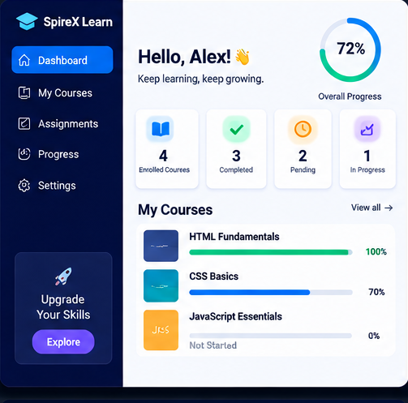
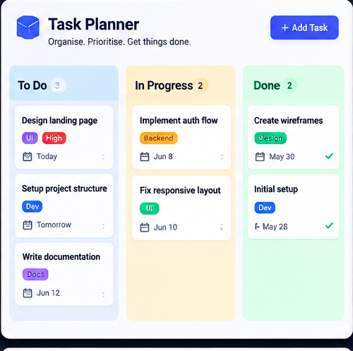
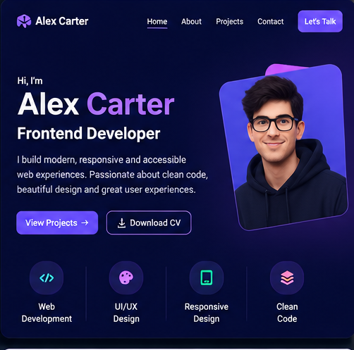
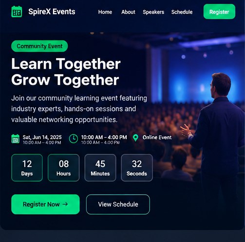
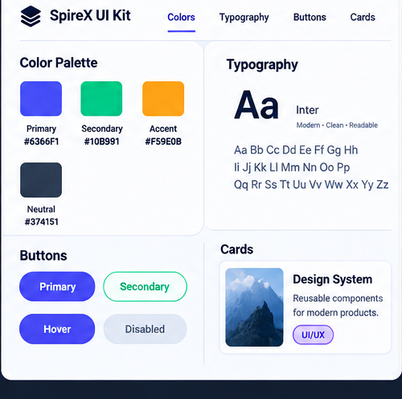
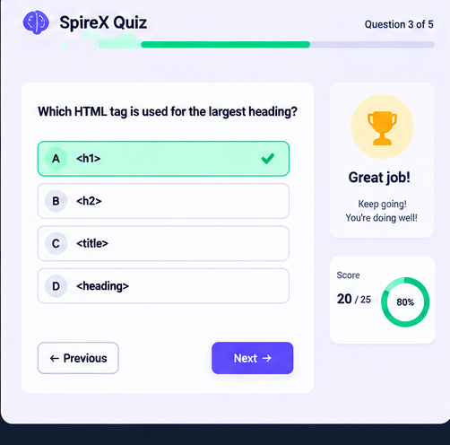

Web
Learning Portal Concept
A responsive learning dashboard that brings lessons, assignments and learners' progress together in one clear interface.
Projects are at the heart of SpireX. Here is a look at the kind of practical, portfolio-ready work learners build.
Select a project to see the tools used and what learners practise while building it.
These are illustrative sample projects that show the type of briefs learners work on. They are examples, not a record of completed client work.
Showing 6 of 6 projects

A responsive learning dashboard that brings lessons, assignments and learners' progress together in one clear interface.

A kanban-style task planner that helps users organise work, update task states and keep data stored in the browser.

A responsive personal portfolio template that helps learners present their skills, projects and professional story online.

An accessible event landing page featuring schedules, speakers and a validated registration experience.

A reusable design foundation covering colour, typography, spacing and interface components for consistent product design.

An interactive quiz application that presents questions, evaluates answers and provides immediate results to the user.
Every project follows the same clear, repeatable rhythm.
Start with a clear goal, audience and set of requirements.
Design and develop in small steps, testing as you go.
Get feedback from mentors and peers, then improve your work.
Present the finished project and add it to your portfolio.
Build projects like these with guidance from mentors and a supportive community.